Подборку собрали 25 ноября, прошедшие события скрыты. Свежая афиша — на главной
Подборка для девичника · данные на 25 ноября
Девичник в Москве: куда пойти с подругами
151 план для девичника и вечера с подругами: бранчи и кофейни, спа и бани, мастер-классы, караоке и бары. Ниже — самые популярные места из этих планов (всего их 241) и 53 события на ближайшие две недели. Отметь пару вариантов и отправь ссылку подругам: каждая выберет, что ей нравится и когда удобно, — без двухсот сообщений в чате.
- 151 план
- 241 место
- 53 события
Планы для девичника 24 из 151
- Биологический музей Тимирязева · Музей · м. Краснопресненская
- 4 минуты пешкомКафедра · Кофейня
Старинный музей с коллекциями и оранжереей, затем четыре минуты пешком до кофейни с пирогами. Лёгкая познавательная прогулка на полдня.
Открыть план: Биомузей и кофе у собораПозвать сюда: Биомузей и кофе у собора
Фото: NVO, CC BY-SA 2.5 · Wikimedia Commons
- Гоголевский бульвар · Бульвар · м. Кропоткинская
- 3 минуты пешкомFinch · Кафе
Неспешная прогулка по Гоголевскому бульвару и пара минут до Большого Афанасьевского, где можно засесть за поздний завтрак и десерты.
Открыть план: Бульвар и бранч в переулкеПозвать сюда: Бульвар и бранч в переулке
Фото: Alina Vozna, CC BY-SA 4.0 · Wikimedia Commons
- Гоголевский бульвар · Бульвар · м. Кропоткинская
- 6 минут пешкомANTIПА · Кафе
Неспешно пройтись по Гоголевскому бульвару и через пять минут сесть завтракать в тихом переулке. Спокойное начало выходного дня.
Открыть план: Бульвар и поздний завтракПозвать сюда: Бульвар и поздний завтрак
Фото: Alina Vozna, CC BY-SA 4.0 · Wikimedia Commons
- Поляндрия • Letters · Кофейня в книжном · м. Сухаревская
- 6 минут пешкомСДВиГ · Бар
Выбираете книги и пьёте кофе в книжном на Садовой, а к открытию бара переходите через площадь за коктейлями и закусками. Около пяти минут пешком.
Открыть план: Книжный, кофе и коктейлиПозвать сюда: Книжный, кофе и коктейли
Фото здания: User:NVO, CC BY-SA 3.0 · Wikimedia Commons
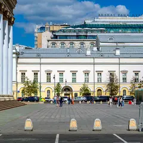
- Малый театр · Театр · м. Театральная
- 7 минут пешкомГранд Кофемания · Ресторан
После спектакля пять минут пешком до ресторана, который открыт до полуночи: можно спокойно обсудить постановку за десертом.
Открыть план: Малый театр и поздний столПозвать сюда: Малый театр и поздний стол
Фото: Никонико962, CC BY-SA 4.0 · Wikimedia Commons
- Патриарший мост · Пешеходный мост · м. Кропоткинская
- 4 минуты пешкомКрасный Октябрь · Бывшая фабрика
- 5 минут пешкомChima · Фудхолл
Встретить закат на Патриаршем мосту, пройтись по Красному Октябрю и поужинать в Chima — всё в пяти минутах.
Открыть план: Мост, Красный Октябрь и ChimaПозвать сюда: Мост, Красный Октябрь и Chima
Фото: NVO, общественное достояние · Wikimedia Commons
- ММОМА на Петровке · Музей современного искусства · м. Чеховская
- 5 минут пешкомТепло · Спа
- 2 минуты пешкомMiss you · Гранд-кафе
Выставка в ММОМА, в четырёх минутах спа с массажем для двоих, а затем долгий разговор за поздним обедом в гранд-кафе рядом.
Открыть план: Музей, спа и гранд-кафеПозвать сюда: Музей, спа и гранд-кафе
Фото: Inna vorobyova, CC BY-SA 4.0 · Wikimedia Commons
- Музей русского импрессионизма · Музей · м. Белорусская
- 10 минут пешкомОдеон · Гастротеатр
Выставка как разминка и повод для фото, потом короткая прогулка до гастротеатра, где мюзикл и сет из нескольких блюд закрывают весь вечер разом.
Открыть план: Нарядный вечер у БелорусскойПозвать сюда: Нарядный вечер у Белорусской
Фото: Sergey A. Demidov, CC BY 4.0 · Wikimedia Commons
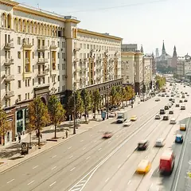
- Тверская улица · Улица · м. Тверская
- 6 минут пешкомАнгликанская церковь Святого Андрея · Концертный зал
- 4 минуты пешкомNiqa · Кондитерская
Сворачиваете с Тверской в переулки, попадаете на дневной концерт в церкви и заканчиваете в кондитерской в четырёх минутах пешком.
Открыть план: Переулки, концерт и десертыПозвать сюда: Переулки, концерт и десерты
Фото: mos.ru, CC BY 4.0 · Wikimedia Commons
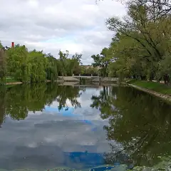
- Новодевичьи пруды · Парк · м. Спортивная
- 10 минут пешкомНародный музей Московского метрополитена · Музей
- 14 минут пешкомУсачёвский рынок · Рынок и фудкорт
Круг у Новодевичьих прудов с видом на монастырь, маленький музей метро по пути и обед на Усачёвском рынке, где каждая найдёт что-то своё.
Открыть план: Пруды, метро и рынокПозвать сюда: Пруды, метро и рынок
Фото: Uwe Brodrecht, CC BY-SA 2.0 · Wikimedia Commons
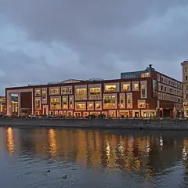
- Третьяковка на Кадашёвской · Музей · м. Полянка
- 10 минут пешкомСофия · Кофейня
После выставки в Кадашах семь минут пешком до набережной, где в колокольне варят кофе. Искусство сменяется тихим двором и панорамой.
Открыть план: Третьяковка и вид на КремльПозвать сюда: Третьяковка и вид на Кремль
Фото: Ludvig14, CC BY-SA 4.0 · Wikimedia Commons
- Мультимедиа Арт Музей · Музей фотографии · м. Кропоткинская
- 4 минуты пешкомЦентральный дом учёных · Столовая
Выставка в Мультимедиа Арт Музее, а через пять минут пешком — недорогой обед в историческом особняке на Пречистенке.
Открыть план: Фотографии и обедПозвать сюда: Фотографии и обед
Фото: JukoFF, CC BY-SA 4.0 · Wikimedia Commons
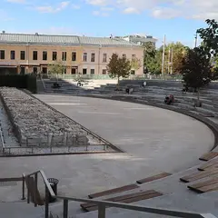
- Хохловская площадь · Площадь-амфитеатр · м. Китай-город
- 4 минуты пешкомОстров Пасхи · Кафе
Посидеть в амфитеатре у старой стены, а через четыре минуты выбрать зал по настроению в кафе при храме. Рядом, без спешки и с поводом для фото.
Открыть план: Хохловка и три зала на ПокровкеПозвать сюда: Хохловка и три зала на Покровке
Фото: T3ru, CC BY-SA 4.0 · Wikimedia Commons
- Draw Up Studio · Арт-вечеринка · м. Китай-город
- 10 минут пешкомNouge · Винное бистро
Пишете картины, а потом идёте пить вино в старинную усадьбу.
Открыть план: Арт-вечеринка и бистроПозвать сюда: Арт-вечеринка и бистро
Фото здания: Александр Сигачёв, CC BY-SA 4.0 · Wikimedia Commons
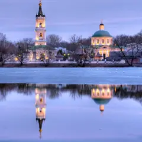
- Белое озеро в Косине · Озеро и яхт-клуб · м. Улица Дмитриевского
- 21 минута пешкомМосква — на волне · Рыбный рынок
Прогулка у Белого озера в Косине мимо разноцветных домиков яхт-клуба, а потом рынок «Москва — на волне»: выбираешь рыбу на прилавке, и её готовят при тебе.
Открыть план: Белое озеро и рыбный рынокПозвать сюда: Белое озеро и рыбный рынок
Фото: Sergey Ashmarin, CC BY-SA 3.0 · Wikimedia Commons
- Смотровая iCITY · Бесплатная смотровая и коворкинг · м. Шелепиха
- 18 минут пешкомBamboo.Bar · Ресторан с террасой
Встретить закат на бесплатной круговой смотровой iCITY, а потом спуститься в квартал на террасу Bamboo.Bar с зеленью и фонтанами — удобно прямо после работы.
Открыть план: Бесплатная смотровая и терраса в СитиПозвать сюда: Бесплатная смотровая и терраса в Сити
Фото: kishjar?, CC BY 2.0 · Wikimedia Commons
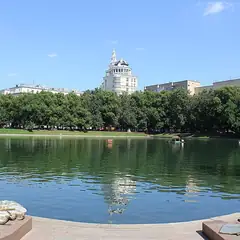
- Патриаршие пруды · Пруд и сквер · м. Маяковская
- 1 минута пешкомERWIN.Павильон · Ресторан на пруду
Неспешный круг вокруг пруда из «Мастера и Маргариты», а потом бранч в ресторане-павильоне Erwin прямо у пруда — он открыт с 9:00.
Открыть план: Бранч на ПатрикахПозвать сюда: Бранч на Патриках
Фото: Dimа, CC BY-SA 3.0 · Wikimedia Commons
- Музей Булгакова · Музей · м. Маяковская
- 8 минут пешкомPinch · Ресторан
Сначала «Нехорошая квартира» в Музее Булгакова, а потом восемь минут пешком до Pinch у Патриарших: завтраки там подают до 16:00, так что бранч получится в самый раз.
Открыть план: Булгаков и поздний бранчПозвать сюда: Булгаков и поздний бранч
Фото: NVO, CC BY-SA 3.0 · Wikimedia Commons
- Гоголевский бульвар · Бульвар · м. Кропоткинская
- 3 минуты пешкомИНО М2 · Гастропространство
Гоголевский бульвар и большое гастропространство в конструктивистском здании.
Открыть план: Бульвар и гастропространствоПозвать сюда: Бульвар и гастропространство
Фото: Alina Vozna, CC BY-SA 4.0 · Wikimedia Commons
- Винный базар · Винный бар · м. Трубная
- 10 минут пешкомSEMENOV · Караоке
Дегустация в «Винном базаре», а потом караоке с танцполом и кухней в 10 минутах пешком.
Открыть план: Вино и песниПозвать сюда: Вино и песни
Фото здания: Mike1979 Russia, CC BY-SA 3.0 · Wikimedia Commons
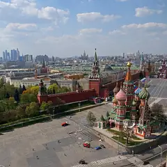
- Красная площадь · Площадь · м. Площадь Революции
- 9 минут пешкомМетрополь · Ресторан в историческом отеле
Прогулка по Красной площади, а с 13 до 17 по воскресеньям — знаменитый бранч-буфет «Метрополя» под витражным куполом с фонтаном.
Открыть план: Воскресный бранч в «Метрополе»Позвать сюда: Воскресный бранч в «Метрополе»
Фото: mos.ru, CC BY 4.0 · Wikimedia Commons
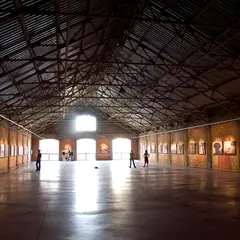
- Винзавод · Центр современного искусства · м. Чкаловская
- 10 минут пешкомArtplay · Дизайн-центр
Выставки в бывших цехах, дизайн-лавки и кофе — неспешная суббота.
Открыть план: Галереи Винзавода и ArtplayПозвать сюда: Галереи Винзавода и Artplay
Фото: Lite, CC BY-SA 4.0 · Wikimedia Commons
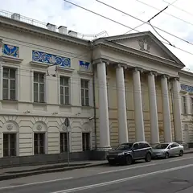
- Галерея Церетели · Музей · м. Парк культуры
- 16 минут пешкомНитка · Русская чайная
Зимний сад и скульптуры в особняке на Пречистенке, потом чаепитие в отдельной комнате «Нитки».
Открыть план: Галерея Церетели и русская чайнаяПозвать сюда: Галерея Церетели и русская чайная
Фото: Sigwald, CC BY-SA 4.0 · Wikimedia Commons
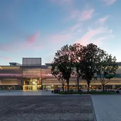
- Музей «Гараж» · Музей современного искусства · м. Парк культуры
- 25 минут пешкомНескучный сад · Парк
Современное искусство и книжный в «Гараже», а потом минут 25 пешком через Парк Горького в Нескучный сад — старые деревья, овраги и набережная без толпы.
Открыть план: Гараж и Нескучный садПозвать сюда: Гараж и Нескучный сад
Фото: Garage Museum of Contemporary Art, CC BY-SA 4.0 · Wikimedia Commons


Места из этих планов 18 из 241
Гоголевский бул.
Тенистый бульвар от Арбатской площади к Храму Христа Спасителя.
Подробнее и маршрут: Гоголевский бульварПозвать сюда: Гоголевский бульвар
Фото: Alina Vozna, CC BY-SA 4.0 · Wikimedia Commons
Красная площадь
Главная площадь страны: Кремль, Василий Блаженный, ГУМ и Исторический музей в одном кадре.
Подробнее и маршрут: Красная площадьПозвать сюда: Красная площадь
Фото: mos.ru, CC BY 4.0 · Wikimedia Commons
Большой Патриарший пер.
Пруд из «Мастера и Маргариты»: скамейки, кафе вокруг, зимой — каток.
Подробнее и маршрут: Патриаршие прудыПозвать сюда: Патриаршие пруды
Фото: Dimа, CC BY-SA 3.0 · Wikimedia Commons
Патриарший мост
Пешеходный мост от Храма Христа Спасителя к «Красному Октябрю» с открыточным видом на Кремль.
Подробнее и маршрут: Патриарший мостПозвать сюда: Патриарший мост
Фото: NVO, общественное достояние · Wikimedia Commons
Ботаническая ул., 4
Японский сад в Ботаническом: пагода, водопады и сакура весной. Вход платный.
Подробнее и маршрут: Японский садПозвать сюда: Японский сад
Фото: Carbonkidka, CC BY-SA 4.0 · Wikimedia Commons
Пресненская наб., 8, стр. 1
Ресторан в Москва-Сити с панорамной террасой, зеленью и фонтанами.
Подробнее и маршрут: Bamboo.BarПозвать сюда: Bamboo.Bar
Фото: BpbAlonka, CC BY-SA 3.0 · Wikimedia Commons
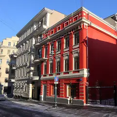
Большой Афанасьевский пер., 14
Новое
Кафе при «Доме предпринимателей» у Кропоткинской: завтраки в любое время, сырники, каши, сэндвичи и витрина с выпечкой и печеньем.
Подробнее и маршрут: FinchПозвать сюда: Finch
Фото здания: Александр Сигачёв, CC BY-SA 4.0 · Wikimedia Commons
Страстной бул., 8А
Две звезды Michelin 2021
Фермерские продукты и вид на центр с седьмого этажа.
Подробнее и маршрут: Twins GardenПозвать сюда: Twins Garden
Фото: Tamara Ivanova-Issayeva, CC BY-SA 4.0 · Wikimedia Commons
Александровский сад
Сад вдоль Кремлёвской стены: Вечный огонь, Итальянский грот и смена почётного караула.
Подробнее и маршрут: Александровский садПозвать сюда: Александровский сад
Фото: Надежда Пивоварова, CC BY-SA 3.0 · Wikimedia Commons
Вознесенский пер., 8/5, стр. 3
Новое
Неоготическая церковь в переулке у Тверской, где регулярно идут концерты. Рядом сквер с ротондой и фонтаном — удобно совместить с прогулкой.
Подробнее и маршрут: Англиканская церковь Святого АндреяПозвать сюда: Англиканская церковь Святого Андрея
Фото: salech hcelas, CC BY 3.0 · Wikimedia Commons
Старая Басманная ул., 15А, стр. 4
Антикварная галерея в особняке XVIII века на Басманной: джаз у винтажного рояля, кабаре и вечера по мотивам фильмов Дэвида Линча.
Подробнее и маршрут: Галерея «Другое дело»Позвать сюда: Галерея «Другое дело»
Фото: Svetlov Artem, CC BY-SA 4.0 · Wikimedia Commons
ул. Пречистенка, 12/2
Главный пушкинский музей в усадьбе Хрущёвых на Пречистенке.
Подробнее и маршрут: Государственный музей ПушкинаПозвать сюда: Государственный музей Пушкина
Фото: NVO, CC BY-SA 2.5 · Wikimedia Commons
Болотная наб., 15
Бывшая электростанция напротив Кремля: выставки, кино и бар у входа. Вход бесплатный по регистрации на сайте, 11:00–22:00.
Подробнее и маршрут: ГЭС-2Позвать сюда: ГЭС-2
Фото: Юрий Д.К., CC BY 4.0 · Wikimedia Commons
Большая Садовая ул., 10
«Нехорошая квартира» №50, где жил Булгаков. Вт–вс, по четвергам до 21:00.
Подробнее и маршрут: Музей БулгаковаПозвать сюда: Музей Булгакова
Фото: NVO, CC BY-SA 3.0 · Wikimedia Commons
Ленинградский пр., 15, стр. 11
Частный музей в бывшей кондитерской фабрике «Большевик»: Коровин, Серов, Кустодиев и сильные временные выставки.
Подробнее и маршрут: Музей русского импрессионизмаПозвать сюда: Музей русского импрессионизма
Фото: Sergey A. Demidov, CC BY 4.0 · Wikimedia Commons
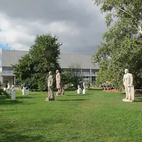
Крымский Вал, 2
Парк скульптур и прогулка по набережной Москвы-реки.
Подробнее и маршрут: МузеонПозвать сюда: Музеон
Фото: sailko, CC BY-SA 3.0 · Wikimedia Commons
Новодевичий пр., Москва
Пруды у стен Новодевичьего монастыря — одна из самых красивых прогулок в Москве.
Подробнее и маршрут: Новодевичьи прудыПозвать сюда: Новодевичьи пруды
Фото: Uwe Brodrecht, CC BY-SA 2.0 · Wikimedia Commons
ул. Пятницкая, 42
Отель-ресторан с садом, вермутерией и галереей в Замоскворечье. 9–00.
Подробнее и маршрут: РихтерПозвать сюда: Рихтер
Фото здания: Kemal KOZBAEV, CC BY-SA 4.0 · Wikimedia Commons


Куда сходить с подругами в ближайшие две недели 8 из 53
Театр Наций · м. Пушкинская · от 1 500 ₽ · 18+
Робер Лепаж ставит Булгакова с технологичными чудесами на сцене, Мастера играет Евгений Миронов. Только четыре вечера подряд в конце ноября, начало в 18:00.
Подробнее: Мастер и МаргаритаПозвать сюда: Мастер и МаргаритаБилеты : Мастер и Маргарита (страница с билетами, откроется в новой вкладке)
Фото: Mike1979 Russia, CC BY-SA 3.0 · Wikimedia Commons
МХТ имени Чехова, Основная сцена · м. Охотный ряд · 1 000–35 000 ₽ · 18+
Премьера Андрея Гончарова: Шекспир как семейная драма о ревности и борьбе за мать. Принц — Юра Борисов, с 25 ноября — Оливер Мара. 1 ч 40 мин.
Подробнее: ГамлетПозвать сюда: ГамлетБилеты : Гамлет (страница с билетами, откроется в новой вкладке)
Фото: A.Savin, Free Art License · Wikimedia Commons
Мультимедиа Арт Музей (МАММ) · м. Кропоткинская · от 100 ₽ · 16+
Фотобиеннале занимает весь МАММ: Роджер Баллен, коллажи Родченко, история метро и многое другое. Билет от 100 ₽, по понедельникам закрыто.
Подробнее: Фотобиеннале-2026Позвать сюда: Фотобиеннале-2026Билеты : Фотобиеннале-2026 (страница с билетами, откроется в новой вкладке)
Фото: JukoFF, CC BY-SA 4.0 · Wikimedia Commons
STILL, Большой зал · м. Чистые пруды · от 2 500 ₽ · 18+
Формат без ведущего: на сцену по очереди выходят пять хедлайнеров, и лайнап каждый раз другой. Сеансы в 16:00, 19:00 или 21:30 — смотри по дате.
Подробнее: 5 хедлайнеров за 2500₽Позвать сюда: 5 хедлайнеров за 2500₽Билеты : 5 хедлайнеров за 2500₽ (страница с билетами, откроется в новой вкладке)
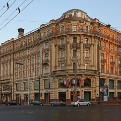
Гастротеатр «Калейдоскоп» · м. Охотный ряд · 18 000–25 000 ₽ · 12+
Гастрошоу у Манежной: два часа путешествия от пирамид Гизы до садов Семирамиды, к каждому чуду — свой сет. Вариант для особого свидания.
Подробнее: 7 чудес светаПозвать сюда: 7 чудес светаБилеты : 7 чудес света (страница с билетами, откроется в новой вкладке)
Фото: A.Savin, CC BY-SA 3.0 · Wikimedia Commons
Манеж · м. Охотный ряд · 680–1 300 ₽ · 0+
Больше 400 снимков дикой природы со всего мира, зал о природе Москвы и макрозона с грибами. Неспешная красивая прогулка в центре, ежедневно 10–21.
Подробнее: Золотая Черепаха. XX Международный фестиваль дикой природыПозвать сюда: Золотая Черепаха. XX Международный фестиваль дикой природыБилеты : Золотая Черепаха. XX Международный фестиваль дикой природы (страница с билетами, откроется в новой вкладке)
Фото: Сергей Секачёв, CC BY-SA 3.0 · Wikimedia Commons
Стендап клуб на Трубной, Большой зал · м. Трубная · 950–1 500 ₽ · 18+
Фирменный вечер клуба: опытные комики с обкатанным материалом. Показы почти каждый день, по пятницам и субботам — в 19:00 и 21:00.
Подробнее: Биг стендапПозвать сюда: Биг стендапБилеты : Биг стендап (страница с билетами, откроется в новой вкладке)
Театр эстрады · м. Кропоткинская · 1 800–20 000 ₽ · 16+
Мюзикл Михаила Миронова на песнях Александра Розенбаума — история длиною в жизнь. Играют почти каждый день до 29 ноября, в выходные дважды.
Подробнее: Вальс-бостонПозвать сюда: Вальс-бостонБилеты : Вальс-бостон (страница с билетами, откроется в новой вкладке)
Фото: ATI1999, CC BY-SA 4.0 · Wikimedia Commons


Как позвать
- Выбери план, место или событие — в карточке адрес, цены и маршрут в Яндекс Картах.
- Нажми «Позвать сюда» — соберётся приглашение-игра для свидания или голосование для компании.
- Отправь ссылку в любой мессенджер: тебе ответят, а компания отметит, куда и когда может. Бесплатно и без регистрации.